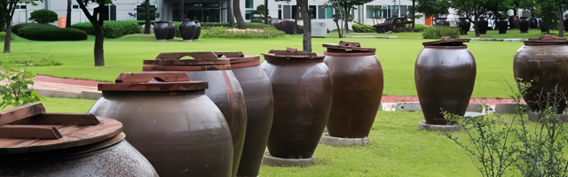
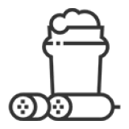
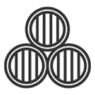
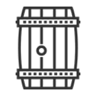
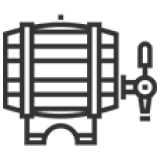
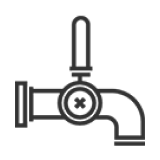
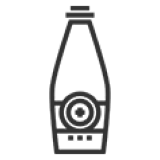
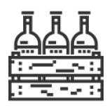

주향로
국순당 횡성양조장에 자리한
우리술 역사.문화 체험 공간
주향로

맑은 공기와 청정한 자연수, 술 빚는 정성이 조화를 이루는 국순당 횡성양조장은 선비가 잔을 대면 맑은 술이 샘솟아 나왔다는 전설 속의 주천강변에 자리잡고 있습니다. 주향로는 ‘한 번쯤 방문해 볼 문화 공간’으로 농림축산식품부가 지정한 대한민국 대표 지역 문화유산인 ‘찾아가는 양조장’입니다.
견학안내
국내 최대 규모의 전통주 양조장 주향로에 방문하시면
우리 술의 역사와 문화를 체험하실 수있습니다.
공정과정
양조장 가동 시에는 60여 년간 전통의 맥을 이어가는
생산과정도 관람하실 수 있습니다.
제품입고 시 10가지 이상의 항목 세부품질검사를 통해 유해 물질을 검증합니다.
조사항목 : 수분, 중금속, 잔류농약, 기타 유해물질, 이물질 관리
중금속 : Pb, Cd, Cr, As, Hg 등
잔류농약 : BHC, DDT 등
산도 및 인위적 색도조정여부 검사
효모를 최적 상태로 증식시켜 발효에 필요한 효모의 수를 얻음
누룩배양 : 미생물을 최적 상태로 증식시켜 효소를 키우는 단계
효모배양 : 효모를 배양하여 담금에 투입 발효과정에서 알코올을 생성하는 단계
누룩배양 / 누룩배양실
생쌀발효를 위해 쌀(설갱미)과 생약재 성분 추출을 용이하게 하기 위해 약재를 분쇄하는 단계
생쌀발효법
설갱미와 12가지 한약재등 각종 원료를 혼합해 술탱크에 담는 단계
주종에 따라 2~4단 담금 적용
담금 / 침미조
설갱미
미생물이 자신이 가지고 있는 효소를 이용해 유기물을 분해 시키는 단계
전분이 알코올로 변화되어 술이 만들어 지는 과정
발효탱크
발효가 완료된 술(탁한상태)을 짜고 찌꺼기(주박)을 제거해서 맑은 술로 만드는 단계
저장(숙성) : 압착이 완료된 술(나주)를 저온에서 보관(저장)하는 과정
화학적 변화 : 술 맛이 부드러워짐
물리적 변화 : 침전 안정성 및 청징성 증가
압착기 / 나주저장탱크
정밀여과기를 이용해 한번 더 맑은 상태로 만드는 단계
압착과의 차이점
압착 : 탁한 술의 찌꺼기를 제거하는 과정
여과 : 한번 걸러진 술의 미세한 물질들까지 모두 제거하는 과정
여과기
여과가 끝난 술을 제품이 담길 병에 자동설비를 통해 술을 담는 단계
주입 전(공병) 후(제품) 이물질이나 기타 파손을 검사해 불량품을 제거하는 단계
제품검사 : 주입이 완료된 "모든 제품"은 검사 과정을 거침
EBI(Empty Bottle Inspector) : 자동으로 미세한 병 파손 및 이물질을 검사하는 최신기계 장치






